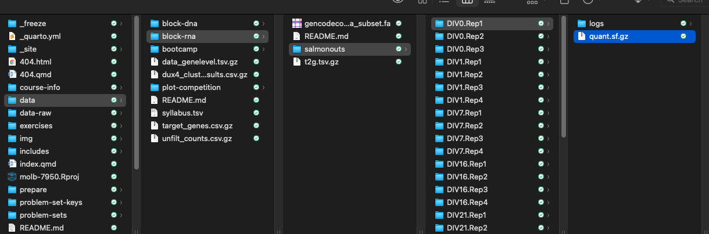

# First we need to define a 'mart' to use.
# There are a handful of them that
# you can see here:
listMarts(
mart = NULL,
host = "www.ensembl.org"
)RNAseq QC
Relating genes and transcripts
We can get this relationships between transcripts and genes through biomaRt.
biomaRt has many tables that relate genes, transcripts, and other useful data include gene biotypes and gene ontology categories, even across species. Let’s use it here to get a table of genes and transcripts for the mouse genome.
I encourage you to see what is in each mart, but for now we are only going to use ENSEMBL_MART_ENSEMBL.
mart <- biomaRt::useMart("??", host = "https://www.ensembl.org")Using biomaRt
Alright, we’ve chosen our mart. What data sets are available in this mart?
datasets <- listDatasets(mart)
gt(datasets)A lot of stuff for a lot of species! Perhaps we want to limit it to see which ones are relevant to mouse.
Using biomaRt
Ah so we probably want the dataset called ‘mmusculus_gene_ensembl’!
mart <- biomaRt::useMart(
"ENSEMBL_MART_ENSEMBL",
dataset = "??",
host = "https://www.ensembl.org"
)Using biomaRt
goodies <- listAttributes(mart)
gt(goodies[1:20,])Using biomaRt
So there are 2885 rows of goodies about the mouse genome and its relationship to many other genomes. However, you can probably see that the ones that are most useful to us right now are right at the top: ‘ensembl_transcript_id’ and ‘ensembl_gene_id’. We can use those attributes in our mart to make a table relating genes and transcripts.
I’m going to through one more attribute in: external_gene_name. Those are usually more informative than ensembl IDs.
Using biomaRt
Alright this looks good! We are going to split this into two tables. One that contains transcript ID and gene ID, and the other that contains gene ID and gene name.
t2g <- t2g |> dplyr::select(??, ??)Getting gene level expression data with tximport
Now that we have our table relating transcripts and genes, we can give it to tximport to have it calculate gene-level expression data from our transcript-level expression data.
First, we have to tell it where the salmon quantification files (the quant.sf.gz files) are. Here’s what our directory structure that contains these files looks like:

Gene expression data with tximport
# The directory where all of the sample-specific salmon subdirectories live
# list.files(here("data/block-rna/differentiation_salmonouts"), pattern = "quant.sf")
metadata <- data.frame(sample_id = ??, # sample id
salmon_dirs = ?? # path to files
) |>
separate(col = sample_id, into = c("samp","rep"), sep = "\\.", remove = F)
metadata$rep <- gsub(pattern = "Rep", replacement = "", metadata$rep)
## add sample id to rownames
rownames(metadata) <- metadata$sample_idGene expression data with tximport
You can see that we got a list of sample names and the absolute path to each sample’s quantification file.
Now we are ready to run tximport
tximport is going to want paths to all the quantification files (salm_dirs) and a table that relates transcripts to genes (t2g). Luckily, we happen to have those exact two things.
# create a list containg paths
salmdir <- ??
# add names
names(salmdir) <- ??
txi <- tximport(files = salmdir,
type = "salmon",
tx2gene = t2g,
dropInfReps = TRUE,
countsFromAbundance = "lengthScaledTPM"
)Gene expression data with tximport
Notice how we chose lengthscaledTPM for our abundance measurement. This is going to give us TPM values (transcripts per million) for expression in the $abundance slot. Let’s check out what we have now.
tpms <- txi$abundance |>
as.data.frame() |>
rownames_to_column(var = "ensembl_gene_id")
gt(tpms[1:50, ])TPM as an expression metric
Alright, not bad!
Let’s stop and think for a minute about what tximport did and the metric we are using (TPM). What does transcripts per million mean? Well, it means pretty much what it sounds like. For every million transcripts in the cell, X of them are this particular transcript. Importantly, this means when this TPM value was calculated from the number of counts a transcript received, this number had to be adjusted for both the total number of counts in the library and the length of a transcript.
If sample A had twice the number of total counts as sample B (i.e. was sequenced twice as deeply), then you would expect every transcript to have approximately twice the number of counts in sample A as it has in sample B. Similarly, if transcript X is twice as long as transcript Y, then you would expect that if they were equally expressed (i.e. the same number of transcript X and transcript Y molecules were present in the sample) that X would have approximately twice the counts that Y does. Working with expression units of TPM incorporates both of these normalizations.
So, if a TPM of X means that for every million transcripts in the sample that X of them were the transcript of interest, then the sum of TPM values across all species should equal one million, right?
Let’s check and see if that’s true.
TPM as an expression metric
colSums(tpms[,-1])
sum(tpms$??)
sum(tpms$??)
sum(tpms$??)OK, not quite one million, but pretty darn close.
This notion that TPMs represent proportions of a whole also leads to another interesting insight into what tximport is doing here. If all transcripts belong to genes, then the TPM for a gene must be the sum of the TPMs of its transcripts. Can we verify that that is true?
TPM as an expression metric
# Redefine for clarity in comparisons
tpms.genes <- tpms
# Make a new tximport object, but this time instead
# of giving gene expression values, give transcript expression values
# This is controlled by the `txOut` argument
txi.transcripts <- tximport(
salmdir,
type = "salmon",
tx2gene = t2g,
dropInfReps = TRUE,
countsFromAbundance = "lengthScaledTPM",
txOut = TRUE
)
# Make a table of tpm values for every transcript
tpms.txs <- ?? |>
as.data.frame() |>
rownames_to_column(var = "ensembl_transcript_id") |>
inner_join(t2g, ., by = "ensembl_transcript_id")
gt(tpms.txs[1:20, ])OK so lets look at the expression of ENSMUSG00000020634 in the first sample (DIVminus8.Rep1).
TPM as an expression metric
# Get sum of tpm values for transcripts that belong to ENSMUSG00000020634
tpms.tx.ENSMUSG00000020634 <- filter(tpms.txs, ensembl_gene_id == "ENSMUSG00000020634")
sumoftxtpm <- sum(tpms.tx.ENSMUSG00000020634$DIVminus8.Rep1)
# Get gene level tpm value of ENSMUSG00000020634
genetpm <- filter(tpms.genes, ensembl_gene_id == "ENSMUSG00000020634")$DIVminus8.Rep1
# Are they the same?
sumoftxtpm
genetpmBasic RNAseq QC
OK now that we’ve got expression values for all genes, we now might want to use these expression values to learn a little bit about our samples. One simple question is > Are replicates similar to each other, or at least more similar to each other than to other samples?
If our data is worth anything at all, we would hope that differences between replicates, which are supposed to be drawn from the same condition, are smaller than differences between samples drawn from different conditions. If that’s not true, it could indicate that one replicate is very different from other replciates (in which case we might want to remove it), or that the data in general is of poor quality.
Another question is:
How similar is each sample to every other sample?
In our timecourse, we might expect that samples drawn from adjacent timepoints might be more similar to each other than samples from more distant timepoints.
Hierarchical clustering
A simple way to think about this is to simply correlate TPM values for genes between samples. For plotting purposes here, let’s plot the log(TPM) of two samples against each other. However, for the actual correlation coefficient we are going to be using the Spearman correlation method, which uses ranks, not absolute values. This means that whether or not you take the log will have no effect on the Spearman correlation coefficient.
# DIVminus8.Rep1 vs DIVminus8.Rep2
r.spearman <- cor(tpms$DIVminus8.Rep1, tpms$DIVminus8.Rep2,
method = "spearman")
r.spearman <- signif(r.spearman, 2)
# plot adding pseudocount + log
ggplot(tpms, aes(x = log??(DIVminus8.Rep1 + ??), y = log??(DIVminus8.Rep2 + ??))) +
geom_point() +
theme_classic() +
annotate("text", x = 2, y = 0, label = paste0("R = ", r.spearman))Hierarchical clustering
With RNAseq data, the variance of a gene’s expression increases as the expression increases. However, using a pseudocount and taking the log of the expression value actually reverses this trend. Now, genes with the lowest expression have the most variance. Why is this a problem? Well, the genes with the most variance are going to be the ones that contribute the most to intersample differences. Ideally, we would like to therefore remove the relationship between expression and variance.
There are transformations, notably rlog and vst, that are made to deal with this, but they are best used when dealing with normalized count data, while here we are dealing with TPMs. We will talk about counts later, but not here.
So, for now, we will take another approach of simply using an expression threshold. Any gene that does not meet our threshold will be excluded from the analysis. Obviously where to set this threshold is a bit subjective. For now, we will set this cutoff at 1 TPM.
Hierarchical clustering
# DIVminus8.Rep1 vs DIVminus8.Rep2
# Since we are plotting log TPM values we will only keep for genes that have expression of at least 1 TPM in both samples
tpms_filt <- tpms |>
dplyr::select(ensembl_gene_id, DIVminus8.Rep1, DIVminus8.Rep2) |>
filter(?? >= ?? & ?? >= ??)
# pull the correlation coefficient
r.spearman <- cor(
tpms_filt$DIVminus8.Rep1,
tpms_filt$DIVminus8.Rep2,
method = "spearman"
)
# round/set sig digits
r.spearman <- signif(r.spearman, 2)
# plot adding pseudocount + log
ggplot(tpms_filt, aes(x = log10(DIVminus8.Rep1 + 1e-3), y = log10(DIVminus8.Rep2 + 1e-3))) +
geom_point() +
theme_classic() +
annotate("text", x = 2, y = 1, label = paste0("R = ", r.spearman))Filtering lowly expressed genes
OK that’s two samples compared to each other, but now we want to see how all samples compare to all other samples. Before we do this we need to decide how to apply our expression cutoff across many samples. Should a gene have to meet the cutoff in only one sample? In all samples? Let’s start by saying it has to meet the cutoff in at least half of the 30 samples.
# Make a new column in tpms that is the number of samples in which the value is at least 1
tpms.cutoff <-
mutate(tpms, nSamples = rowSums(tpms[, ??] > 1)) |>
# Now filter for rows where nSamples is at least 15
# Meaning that at least 15 samples passed the threshold
filter(nSamples >= ??) |>
# Get rid of the nSamples column
dplyr::select(-nSamples)
nrow(tpms)
nrow(tpms.cutoff)Correlating gene expression values
Now we can use the cor function to calculate pairwise correlations in a .red[matrix] of TPM values.
tpms.cutoff.matrix <- tpms.cutoff |>
dplyr::select(-ensembl_gene_id) |>
as.matrix() # some functions just take matrices
tpms.cor <- cor(??, method = "spearman")
head(tpms.cor)Hierarchical clustering
Now we need to plot these and have similar samples (i.e. those that are highly correlated with each other) be clustered near to each other. We will use pheatmap to do this.
# let's pull information that we want to add as categories
pheatmap(
tpms.cor,
annotation_col = ??,
fontsize = 7,
show_colnames = FALSE
)This looks pretty good! There are two main points to takeaway here. First, all replicates for a given timepoint are clustering with each other. Second, you can kind of derive the order of the timepoints from the clustering. The biggest separation is between early (DIVminus8 to DIV1) and late (DIV7 to DIV28). After that you can then see finer-grained structure.
PCA analysis
Another way to visualize relationships is using a dimensionality reduction technique called Principal Component Analysis (PCA). Let’s watch this short video. It focuses more on how to interpret them rather than the math behind their creation.
PCA analysis
PCA works best when values are approximately normally distributed, so we will first take the log of our expression values.
With our cutoff as it is now (genes have to have expression of at least 1 TPM in half the samples), it is possible that we will have some 0 values. Taking the log of 0 might cause a problem, so we will add a pseudocount.
PCA analysis
Very similar interpretation as before (heatmap of correlation).
# prcomp expects samples to be rownames, right now they are columns
# so we need to transpose the matrix using `t`
tpms.pca <- prcomp(t(tpms.cutoff.matrix))
# The coordinates of samples on the principle components are stored in the $x slot
# These are what we are going to use to plot
# We can also also some data about the samples here so that our plot is a little more interesting
### Tricky piping!!
tpms.pca.pc <- tpms.pca$x %>%
as.data.frame() %>%
rownames_to_column(var = "sample_id") %>%
left_join(., metadata[,1:3], by = "sample_id")
# We can see how much of the total variance is explained by each PC using the summary function
tpms.pca.summary <- summary(tpms.pca)$importance
# The amount of variance explained by PC1 is the second row, first column of this table
# It's given as a fraction of 1, so we multiply it by 100 to get a percentage
pc1var <- round(tpms.pca.summary[2, 1] * 100, 1)
# The amount of variance explained by PC2 is the second row, second column of this table
pc2var <- round(tpms.pca.summary[2, 2] * 100, 1)
# Reorder timepoints explicitly for plotting purposes
tpms.pca.pc$samp <-
factor(
tpms.pca.pc$samp,
levels = c(
"DIVminus8", "DIVminus4", "DIV0",
"DIV1", "DIV7", "DIV16", "DIV21", "DIV28"
)
)
# Plot results
ggplot(data = tpms.pca.pc,
aes(
x = PC1, y = PC2,
color = samp, label = sample_id
)
) +
geom_point(size = 5) +
scale_color_brewer(palette = "Set1") +
theme_cowplot(16) +
labs(
x = paste("PC1,", pc1var, "% explained var."),
y = paste("PC2,", pc2var, "% explained var.")
) +
geom_text_repel()